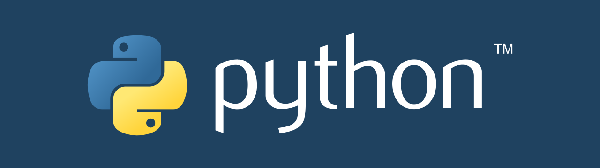
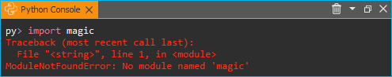

20. Python Add-on
20.1. Einführung in Python Add-on
Achtung
Das CETONI Elements Python Add-on ermöglicht Ihnen die Steuerung und Automatisierung von Prozessen mit der Skriptsprache Python. Überprüfen Sie die erstellten Skripte/Programme sowie die Parametereingaben, bevor Sie diese zum ersten Mal ausführen! CETONI übernimmt keine Haftung für direkte und/oder indirekte Schäden an Ihrem System oder externen Hard- und Softwarekomponenten, die durch die von Ihnen erstellten Skripte/Programme oder durch die Verwendung von Parametern, die für Ihre spezifische Anwendung nicht geeignet oder ungünstig sind, entstehen.
Das Python-Add-on ermöglicht es Ihnen, Python-Code in CETONI Elements-Skripten über eine entsprechende Skriptfunktion auszuführen. Es bietet somit eine einfache Möglichkeit, die Skriptsprache Python in Ihre CETONI Elements Skripte einzubinden.
Der eingebettete Python-Interpreter bietet die gleiche Funktionalität wie die Ausführung von Python-Skripten über den Befehl python. D.h. wenn Sie Bibliotheken über pip für die vom Add-On verwendete Python-Version installieren, stehen die Funktionen dieser Python-Bibliotheken auch in CETONI Elements zur Verfügung.
Dadurch ergeben sich viele zusätzliche Möglichkeiten, wie z. B. der Zugriff auf und das Parsen von Dateien, der Zugriff auf Datenbanken, die TCP/IP-Netzwerkkommunikation über Python-Sockets oder die Nutzung komplexer, in Python implementierter Analysefunktionen.
20.2. Installation
Das Python Add-on ist nicht im Standard Installationspaket enthalten, sondern muss als Add-on zusätzlich installiert werden. Die Versionen des Python Add-ons und der installierten CETONI Elements Software sollten übereinstimmen. Wenn Sie z.B. das Python Add-on mit der Versionsnummer 20220126 installieren möchten, sollte die CETONI Elements Software mit der Versionsnummer 20220126 installiert sein.
Wichtig
Die Versionsnummer der CETONI Elements Software und des Python Add-ons sollten übereinstimmen. Die Versionsnummer des Python Add-ons darf niemals größer sein als die der CETONI Elements Software. Je weiter die Versionsnummern auseinander liegen, um so größer ist das Risiko von Fehlfunktionen.
Starten Sie zur Installation die Datei CETONI_Elements_Python_64bit_Setup.exe.
Der Installationsassistent führt Sie anschließend durch die Installation der Software.

Zur Verwendung des Python Add-ons muss auf Ihrem Rechner eine passende Python 64-bit Version installiert sein. Im Installationsschritt Choose Components können Sie die benötigte Version sehen (hier z.B. Python 3.8) und diese ggf. zur Installation auswählen, falls diese noch nicht auf Ihrem Rechner vorhanden ist.
Wichtig
Unter Windows müssen Sie mit Administratorrechten angemeldet sein, um das Add-on installieren zu können, da es für alle Anwender installiert wird.
Wichtig
Die installierte Python Version muss der Version entsprechen, die im Installer angegeben ist. Das Plugin wird mit anderen Versionen nicht korrekt funktionieren.
20.3. Python Console
20.3.1. Übersicht
Das Python Add-on verfügt über eine Python Konsole, mit der Sie ähnlich wie mit der Standard Python Konsole Python Code interaktiv eingeben und ausführen können. Sie können die Python Konsole über das Hauptmenü einblenden ():

In der Python Konsole können Sie Kommandos ausprobieren, den Zugriff auf Objekte testen und und sie hilft Ihnen bei der Fehlersuche. Wenn Funktionsaufrufe in der Konsole funktionieren, dann können Sie diese auch in Ihrem Script verwenden.
20.3.2. Kontextmenü
Das Kontextmenü der Python Konsole enthält die üblichen Befehle zur Textbearbeitung

Um den Inhalt der Konsole zu löschen, wählen im Kontextmenü den Punkt Clear ❶ oder klicken Sie in der Titelzeile auf das Mülleimer Symbol ❷.
Achtung
Gefahr von Fehlfunktion / Datenverlust !
Verwenden Sie die Python Console nicht in einem laufenden Versuch, Prozess oder während des normalen Betriebs oder produktiven Einsatzes. Fehleingaben oder der Zugriff auf Ressourcen kann unter Umständen zum Absturz der Software führen.
20.3.3. Code-Vervollständigung
Die Python Konsole unterstützt Sie bei der Eingabe durch eine einfache Code-Vervollständigung. D.h., wenn Sie Module importiert haben, dann unterstützt Sie die Code-Vervollständigung bei der Eingabe durch passende Vorschläge, wie Sie es auch aus anderen Code-Editoren gewohnt sind.

Im Beispiel oben wurden alle Funktionen aus dem Modul
cetoni_elements importiert. Nach der Eingabe von ScriptEnv.get
werden passende Funktionen für das Objekt ScriptEnv angezeigt, die mit
get beginnen.
20.3.4. Fehlermeldungen
Fehler, die bei der Ausführung von Code in der Python Konsole auftreten, aber auch Fehler die bei der Ausführung von Python Code in der Python Scriptfunktion auftreten, werden Ihnen in der Python Konsole als roter Text angezeigt.
20.4. Python Module
20.4.1. Standard Module importieren
Das Plugin verwendet eine Standard Python Installation und hat somit
Zugriff auf alle Standardmodule von Python oder auf andere Module, die
via pip installiert wurden. Sie können ein Modul wie gewohnt mittels
import Anweisung importieren. Im folgenden Beispiel wird das time
Modul importiert und verwendet:

20.4.2. Eigene Module importieren
Wenn Sie eigene Module verwenden, die Sie zusammen mit Ihrem Projekt
weitergeben oder ausliefern wollen, dann können Sie diese in den
Unterordner Scripts/Python ihres aktuellen Projekts speichern. Dieses
Verzeichnis wird von der Software zum sys.path des Python Interpreters
hinzugefügt. Wenn Sie z.B. im Projekt PythonDev arbeiten, dann wäre
der absolute Pfad zu diesem Verzeichnis:
C:/Users/Public/Documents/QmixElements/Projects/PythonDev/Scripts/Python
Wenn Sie in der Python Konsole das Modul sys importieren, dann können
Sie via sys.path sehen, dass sich das o.g. Verzeichnis im Importpfad
befindet.
Zum Test der Importfunktionalität erstellen Sie in dem o.g.
Ordner die Datei hello.py mit folgendem Inhalt:
def helloworld():
print("hello world")
Sie können dieses Modul nun importieren und die Funktion helloworld
verwenden:
20.5. Zugriff auf Applikationsobjekte
20.5.1. Das Modul cetoni_elements
Die Software fügt dem Python-Interpreter ein Modul cetoni_elements
hinzu, das für den Zugriff auf Applikationsobjekte verwendet werden
kann. Nach dem import des Moduls über from cetoni_elements import *
können Sie auf diese Objekte zugreifen. Das ScriptEnv-Objekt ist das zentrale
Objekt für den Zugriff auf verfügbare Geräte und Anwendungsobjekte.
Bemerkung
Siehe Python-API für eine detaillierte Beschreibung des ScriptEnv-Objekts.
Das folgende Bild zeigt, wie man das Modul cetoni_elements importiert und
dann die Funktion help() des Objekts ScriptEnv aufruft:

20.5.2. Eigenschaften und Methoden von Objekten anzeigen.
Mit der Python Funktion dir(object) können Sie sich alle Methoden und
Eigenschaften von Applikationsobjekten anzeigen lassen. Damit können Sie
sich z.B. alle Funktionen und Eigenschaften des ScriptEnv Objekts
anzeigen lassen.

Alternativ verfügen alle Applikationsobjekte auch über eine
help() Funktion, die eine übersichtlichere Anzeige der Eigenschaften
und Methoden eines Objekts ermöglicht. In der Abbildung unten ist der
Aufruf von ScriptEnv.help() zu sehen. In der Konsole werden Ihnen die
Eigenschaften (Properties ❶) und Methoden (Slots ❷) des
ScriptEnv Objekts angezeigt:

Tipp
Verwenden Sie die dir(object) und die
Object.help() Funktionen, um sich einen Überblick
über die Methoden und Eigenschaften eines bestimmten
Objekts zu verschaffen.
20.5.3. Geräte-Objekte verwenden
Über die Funktion ScriptEnv.getDevice() können Sie auf Geräteobjekte
zugreifen. Um eine Übersicht der verfügbaren Gerätenamen zu erhalten,
können Sie die Funktion ScriptEnv.getDeviceNames() aufrufen.

Die Code-Vervollständigung unterstützt Sie bei der Eingabe
eines Gerätenamens, indem sie Ihnen eine Liste passender Namen anzeigt
(siehe Abbildung oben). Wenn Sie die Funktion getDevice() aufrufen,
ohne eine Zuweisung an eine Variable, dann können Sie in der Konsole
sehen, ob der Aufruf erfolgreich war:
py> ScriptEnv.getDevice("Nemesys_S_1")
CNemesys4Pump (QtLabb::CNemesys4Pump at: 0x000002402DDCBF20)
Um auf ein Gerät zugreifen zu können, weisen Sie das Ergebnis des
Aufrufs von getDevice() einer Variable zu. Im folgenden Beispiel
weisen wir der Variable pump das Geräteobjekt für die erste Nemesys S
Pumpe zu:
py> pump = ScriptEnv.getDevice("Nemesys_S_1")
Nun können Sie sich mit Hilfe der dir(pump) und der pump.help()
Funktionen einen Überblick über die verfügbaren Methoden und Funktionen
des Pumpen Objekts verschaffen.
Tipp
Verwenden Sie die dir(object) und die
Object.help() Funktionen, um sich einen Überblick
über die Methoden und Eigenschaften von Geräteobjekten
zu verschaffen.
Wichtig
Der Zugriff auf Geräteeigenschaften und
-methoden oder die Anzeige der Hilfe via
Object.help() ist bei vielen Geräten nur möglich,
wenn die Anwendung zu den Geräten verbunden ist.
Achtung
Gefahr von Fehlfunktion / Datenverlust !
Über Gerätefunktionen haben Sie ggf. Zugriff auf Funktionen die in der grafischen Oberfläche nicht zur Verfügung stehen. Testen Sie Funktionen stets außerhalb laufender Prozesse und nicht während eines produktiven Einsatzes. Fehleingaben oder der Zugriff auf Ressourcen, Methoden oder Eigenschaften kann unter Umständen zu Fehlfunktionen oder zum Absturz der Software führen.
Wenn Sie mit dem Geräte verbunden sind, können Sie nun über die Gerätefunktionen auf das Gerät zugreifen. So können Sie z.B. bei der Pumpe einen Refill Vorgang auslösen:
py> pump.refillSyringe()
oder den Pumpvorgang stoppen:
py> pump.stopPumping()
Der folgende Code zeigt, wie Sie das cetoni_elements Modul
importieren, sich über das ScriptEnv Objekt das Geräteobjekt für die
Nemesys S Pumpe besorgen und dann einen Entleervorgang der Spritze
starten:
py> from cetoni_elements import
py> pump = ScriptEnv.getDevice("Nemesys_S_1")
py> pump.emptySyringe()
20.5.4. Applikationsobjekte verwenden
Ähnlich wie bei Geräteobjekten, können Sie auch auf Applikationsobjekte,
die keine Geräte sind zugreifen. Verwenden Sie dafür die beiden
Funktionen ScriptEnv.getObject() und criptEnv.getObjectNames().
Der folgende Code zeigt, wie Sie das cetoni_elements Modul
importieren, sich über das ScriptEnv Objekt das Applikationsobjekt des
grafischen Loggers besorgen und anschließend das Logging starten:
py> from cetoni_elements import *
py> plot = ScriptEnv.getObject("ProcessDataGraph")
py> plot.startLogging()
Tipp
Verwenden Sie die dir(object) und die
Object.help() Funktionen, um sich einen Überblick
über die Methoden und Eigenschaften von
Applikationsobjekten zu verschaffen.
Achtung
Gefahr von Fehlfunktion / Datenverlust !
Über die Funktionen der Applikationsobjekte haben Sie ggf. Zugriff auf Funktionen die in der grafischen Oberfläche nicht zur Verfügung stehen. Testen Sie Funktionen stets außerhalb laufender Prozesse und nicht während eines produktiven Einsatzes. Fehleingaben oder der Zugriff auf Ressourcen, Methoden oder Eigenschaften kann unter Umständen zu Fehlfunktionen oder zum Absturz der Software führen.
20.6. Python Scriptfunktionen - Execute Python Code
20.6.1. Übersicht

Das Python Plugin fügt dem Script-Pool die Scriptfuktion
Execute Python Code hinzu, die in der Kategorie Core Functions
des Script Pool zur Verfügung steht:
Diese Funktion ermöglicht die Ausführung von Python Code im
Scriptsystem der Anwendung. Wenn Sie die Funktion in Ihr Script
einfügen, sehen Sie im Konfigurationsbereich das initiale Python Script.
Dieses Script enthält die beiden Funktionen script_exec() und
script_abort() :
# Implement your script logic in this function
# Avoid blocking function calls
def script_exec():
return
# Implement your clean up code here in case of script stop
# Stop pending actions, clean up resources
# Keep execution time of this function short and do not use
# any blocking function calls
def script_abort():
return
Bei der Ausführung des Scripts wird dieses vom Python
Interpreter als eigenes Modul geladen und dann die Funktion
script_exec() ausgeführt. D.h. diese Funktion ist die Hauptfunktion
des Scripts und die Logik sollte dort implementiert werden.
Tipp
Alle Möglichkeiten auf Geräteobjekte und Applikationsobjekte zuzugreifen, die in der Python Konsole der Anwendung zur Verfügung stehen, können auch in der Scriptfunktion verwendet werden.
Der Python Interpreter kann stets nur ein Python Script gleichzeitig ausführen. Eine parallele Ausführung ist nicht möglich. Wenn Sie Python Scripte in parallelen Sequenzen verwenden, dann werden die Scripte hintereinander ausgeführt, d.h. ein paralleler Ausführungszweig blockiert solange, bis die Ausführung eines Scriptes in einem anderen Zweig abgeschlossen ist. Dies ist ein weiterer Grund dafür, dass Sie die Ausführungszeit der Scripte so kurz wie möglich halten sollten. Verwenden Sie nicht blockierende Python Scripte mit kurzen Ausführungszeiten, so ist auch eine „quasi parallele“ Ausführung in parallelen Sequenzen möglich.
Wichtig
Eine parallele Ausführung mehrerer Python Funktionen ist nicht möglich. Werden Python Scripte in parallelen Sequenzen verwendet, so werden diese nacheinander ausgeführt.
20.6.2. Python Script Editor
Die Python Script Funktion verfügt über einen Python Code Editor, der Sie beim Schreiben von Python Code unterstützt.

Der Editor verfügt über
Syntax Highlighting für Python Code ❶
eine einfache Code Vervollständigung
Code Folding ❷
Zeilennummern ❸
Undo / Redo Funktionalität ❹
Einige Funktionen des Editors stehen über das Kontextmenü zur Verfügung, andere Funktionen sind über Tastenkürzel verfügbar. Hier einige der Funktionen:
Aktion |
Tastaturkürzel |
|---|---|
Schriftgröße vergrößern |
Ctrl + + |
Schriftgröße verkleinern |
Ctrl + - |
Schriftgröße auf Standard zurücksetzen |
Ctrl + 0 |
Ausgewählten Codeblock einrücken |
Tab |
Ausgewählten Codeblock ausrücken |
Shift + Tab |
Undo |
Ctrl + Z oder Kontextmenü |
Redo |
Ctrl + Y oder Kontextmenü |
Wichtig
Das Editieren des Python Quelltextes ist nur möglich, wenn das Script nicht läuft. Sobald das Script gestartet wurde ist das Editieren des Quelltextes gesperrt. Im Falle eines Fehlers müssen Sie das Script über die Terminate Script Schaltfläche beenden, bevor Sie den Python Code editieren können.
20.6.3. Den Scriptabbruch handeln - script_abort()
Wenn das laufende Script über die Terminate Script Schaltfläche des
Script Editors (siehe Abbildung unten) abgebrochen wird, dann wird die
Ausführung von script_exec() unterbrochen und die Funktion
script_abort() wird ausgeführt:
Im Fall eines solchen Abbruchs sehen Sie in der Python Konsole eine entsprechende Fehlermeldung:

Wenn Sie auf den Abbruch des Scripts reagieren möchten, z.B.
um Ressourcen freizugeben oder um den Anwender zu informieren, dann
können Sie dies in der script_abort() Funktion tun. Wenn Sie in der
script_abort() Funktion auf Daten oder Objekte (z.B. File Handels,
Sockets o.ä) zugreifen möchten, die Sie in der script_exec() Funktion
verwendet haben, so können Sie dies über globale Variablen tun. Das
folgende Script zeigt ein entsprechendes Beispiel. In der
script_abort() Funktion wird die Anzahl der Schleifendurchläufe
ausgegeben, die bis zum Abbruch des Scripts durchlaufen wurden. Beide
Funktionen greifen dafür auf die globale Variable counter zu:
import time
counter = None
def script_exec():
global counter
for i in range(1000):
counter = i
print(i)
time.sleep(1)
return
def script_abort():
global counter
print("script_abort() after ", counter, " loops")
return
20.6.4. Implementierung der Funktionslogik in script_exec()
Bei der Implementierung des Scriptes in script_exec() sollten Sie
darauf achten, keine blockierenden Funktionen oder blockierendes Warten
zu verwenden. Der Python Interpreter kann über die Terminate Script
Schaltfläche nur nach der Ausführung des aktuellen Python
Statements unterbrochen werden. Sollte das aktuelle Statement ein
blockierender Funktionsaufruf sein, z.B. time.wait(10), kann der
Interpreter erst nach 10 Sekunden unterbrochen werden wenn der wait
Aufruf beendet wurde. Versehen Sie deshalb blockierende Funktionsaufrufe
immer mit einem Timeout.
Wichtig
Verwenden Sie keine blockierenden Funktionsaufrufe um einen Abbruch der Skriptausführung nicht zu blockieren. Versehen Sie blockierende Funktionsaufrufe stets mit einem Timeout.
Im folgenden Beispiel ist der Aufruf von socket.recv() in Zeile 8
blockierend. D.h. der Aufruf kehrt erst zurück, wenn Daten empfangen
wurden. Solange keine Daten empfangen werden, blockiert die Funktion und
das Script kann nicht sauber abgebrochen werden:
import socket
def script_exec():
HOST = '127.0.0.1' # The server's hostname or IP address
PORT = 65432 # The port used by the server
with socket.socket(socket.AF_INET, socket.SOCK_STREAM) as s:
s.connect((HOST, PORT))
data = s.recv(2048)
return
Um dieses Problem zu beheben sollte der Aufruf von socket.recv() mit
einem Timeout versehen werden. Dies wurde im folgenden Beispiel mit
Hilfe der Funktion socket.settimeout() umgesetzt:
import socket
def script_exec():
HOST = '127.0.0.1' # The server's hostname or IP address
PORT = 65432 # The port used by the server
with socket.socket(socket.AF_INET, socket.SOCK_STREAM) as s:
s.connect((HOST, PORT))
s.settimeout(0.5)
try:
data = s.recv(2048)
except socket.timeout as err:
print(err)
return
20.6.5. Fehler bei Scriptausführung
Wenn während der Ausführung eines Scripts Fehler auftreten, werden Ihnen diese im Event Log und in der Python-Konsole Python console angezeigt. Wenn Sie im Event Log die Maus über die Fehlermeldung bewegen, sehen Sie ein Hinweisfenster mit den Details:

In der Python Konsole wird Ihnen die Fehlermeldung als roter Fehlertext angezeigt:

In der Fehlermeldung erhalten Sie auch die Information, in welcher Zeile des Scripts ein Fehler aufgetreten ist. Das hilft Ihnen, im Script-Editor den Fehler zu finden und zu beheben.
Wichtig
Das Editieren des Python Quelltextes ist nur möglich, wenn das Script nicht läuft. Sobald das Script gestartet wurde ist das Editieren des Quelltextes gesperrt. Im Falle eines Fehlers müssen Sie das Script über die Terminate Script Schaltfläche beenden, bevor Sie den Python Code editieren können.
20.6.6. Eigene Module verwenden
Wenn Ihr Script eine sehr komplexe und umfangreiche Logik enthält,
können Sie den Code ggf. in ein externes Modul auslagern und über die
Importfunktionalität einbinden (siehe Abschnitt Eigene Module
verwenden). Sie können
dann aus script_exec() heraus die Funktionen des importierten Moduls
aufrufen.
Im folgenden Beispiel importieren wir unser eigenes Modul hello und
rufen daraus die Funktion helloworld() auf.
import hello
def script_exec():
hello.helloworld()
return
Dies Ausgabe des Scripts erscheint sowohl im Event Log:

als auch in der Python Konsole:

Wenn Sie das Modul bereits importiert haben und danach noch
Änderungen am externen Modul durchführen, dann sind diese Änderungen in
Ihrem Python Script in der Anwendung nicht verfügbar. Dies ist das
normale Verhalten des Python Interpreters – wenn ein Modul einmal
importiert wurde, dann wird es nicht erneut importiert. Fügen Sie
testweise Ihrem eigenen hello Modul die Funktion hellouniverse()
hinzu:
def hellouniverse():
print("hello universe")
Bei der Ausführung erhalten Sie die Information, dass die Funktion
hellouniverse nicht verfügbar ist.
Um zu verhindern, dass Sie nach der Änderung des externen Moduls die
Anwendung neu starten müssen, um das Modul erneut zu importieren, können
Sie in Ihrem Script mit der reload() Funktion aus dem Modul
importlib explizit ein Reload anfordern. Ändern Sie dafür Ihr Python
Script in der Anwendung wie folgt ab:
import hello
from importlib import reload
def script_exec():
reload(hello) # trigger explicit reload of hello module
hello.helloworld()
hello.hellouniverse()
return
Das Script wird nun korrekt ausgeführt.
Tipp
Verwenden Sie die importlib.reload()
Funktion, wenn Sie Änderungen an externen Modulen
durchführen, nachdem Sie diese bereits via import in
Ihr Python Script in der Anwendung importiert haben.
20.6.7. Zugriff auf Scriptvariablen
Um die Ergebnisse von Berechnungen im Python Code an das laufende Script
übergeben zu können oder auf Werte aus dem Script reagieren zu können,
ist der Zugriff auf Scriptvariablen möglich. Dazu importieren Sie das
Modul cetoni_elements (siehe Abschnitt Das Modul cetoni_elements).
Wenn Sie das Modul importiert haben, können Sie über die Funktionen
ScriptEnv.getVar(), ScriptEnv.setVar() und
ScriptEnv.setVars() auf Scriptvariablen zugreifen. Das folgende
Beispiel zeigt, wie die Scriptvariable $Flow gelesen, um 2
inkrementiert und dann der berechnete Wert wieder in der Scriptvariablen
gespeichert wird:
from cetoni_elements import *
def script_exec():
flow = ScriptEnv.getVar("$Flow")
print(flow)
flow = flow + 2;
ScriptEnv.setVar("$Flow", flow)
print(flow)
return
Wichtig
Beachten Sie, das Scripvariablen auch im
Python Script immer mit einem Dollarzeichen beginnen -
$VarName.
Mit Hilfe von Scriptvariablen kann auch auf Geräte zugegriffen werden.
Scriptvariablen können Gerätereferenzen speichern. Durch das Lesen der
Gerätereferenz und der Zuweisung an eine Python Variable kann auf das
Geräteobjekt zugegriffen werden. Im folgenden Beispiel enthält die
Scriptvariable $Pump1 eine Gerätereferenz der Pumpe Nemesys_S_1, die
der Variablen in der Create Variable Funktion zugewiesen wurde. Die
Gerätereferenz wird aus der Variable gelesen und der Python Variable
pump zugewiesen. Nun kann über die pump Variable auf
Gerätefunktionen zugegriffen werden. In diesem Beispiel wird die Spritze
via pump.emptySyringe() entleert:
from cetoni_elements import *
def script_exec():
pump = ScriptEnv.getVar("$Pump1")
print(pump)
pump.emptySyringe()
return
Im Python Code ist es auch möglich Listen zu erzeugen, und diese in
einer Variablen zu speichern. Das folgende Beispiel erzeugt eine Liste
aus 4 Werten und speichert diese in der Scriptvariable $Positions:
from cetoni_elements import *
def script_exec():
ScriptEnv.setVar("$Positions", [0, 3.5, 12, 7])
return
Statt einfacher Werte können auch Listen von Geräten erzeugt und in
Variablen gespeichert werden. Im folgenden Beispiel wird eine Liste
erzeugt, welche die beiden Digitalen Eingänge der ersten Nemesys S-Pumpe
enthält. Diese Liste wird in der Scriptvariable $DigitalInputs
gespeichert.
from cetoni_elements import *
def script_exec():
di1 = ScriptEnv.getDevice("Nemesys_S_1_DigIN1")
di2 = ScriptEnv.getDevice("Nemesys_S_1_DigIN2")
ScriptEnv.setVar("$DigitalInputs", [di1, di2])
return
20.7. Beispielscripte
20.7.1. Barcode Scanner
Das folgende Beispielscript zeigt, wie die Kamera Unterstützung von CETONI Elements verwendet werden kann, um mit Hilfe des pyzbar Moduls einen Barcode Scanner zu implementieren:
1from pyzbar import pyzbar
2import time
3import qimage2ndarray
4from cetoni_elements import *
5
6# Main script function
7def script_exec():
8 barcode = None
9 camera = ScriptEnv.getObject('Qmix_CAM_1')
10 qimage = camera.capturedPreviewImage()
11 frame = qimage2ndarray.rgb_view(qimage)
12 barcodes = pyzbar.decode(frame)
13 for b in barcodes:
14 barcode = b.data.decode('utf-8')
15 break
16
17 # output
18 if barcode is not None:
19 ScriptEnv.setVar('$Barcode', barcode)
20 else:
21 ScriptEnv.setVar('$Barcode', 0)
22 return
Durch den Import des Moduls cetoni_elements kann auf die Kamera
zugegriffen und ein Bild aufgenommen werden:
camera = ScriptEnv.getObject('Qmix_CAM_1')
qimage = camera.capturedPreviewImage()
Das Modul qimage2ndarrays
hilft uns dabei, das aufgenommene Bild im Format QImage in ein
numpy.ndarray zu konvertieren, welches vom
pyzbar Modul verwendet wird.
frame = qimage2ndarray.rgb_view(qimage)
Nun können wir das pyzbar Modul verwenden um den Barcode zu decodieren:
barcodes = pyzbar.decode(frame)
for b in barcodes:
barcode = b.data.decode('utf-8')
break
Im letzten Schritt wird der Barcode mit der Funktion
ScriptEnv.setVar() in der Scriptvariable $Barcode gespeichert, damit
er im Script zur Verfügung steht und ausgewertet werden kann.
if barcode is not None:
ScriptEnv.setVar('$Barcode', barcode)
else:
ScriptEnv.setVar('$Barcode', 0)
return
20.8. API-Referenz
20.8.1. ScriptEnv
Das ScriptEnv-Objekt ist das zentrale Objekt für den Zugriff auf
verfügbare Geräte und Anwendungsobjekte.
-
QStringList getDeviceNames() const
Returns a tuple with all device names that can be accessed from Python.
Use the device name when calling the
getDevice()function to get the corresponding device object.
-
QtLabb::Core::CDevice *getDevice(const QString &Name) const
Returns the device object for the given device name.
The device object provides access to device-specific functions and properties of this device. The device names are the names that are also used in the CETONI Elements script system to access devices or device properties.
Example:
pump = ScriptEnv.getDevice("Nemesys_S_1")
-
QStringList getObjectNames() const
Returns a list of all registered application objects that are not devices and that can be accessed from Python, such as the graphical logger.
-
QObject *getObject(const QString &Name) const
Returns the object with the given object name
Name.Example:
plot = ScriptEnv.getObject("ProcessDataGraph")
-
QVariant getVar(const QString &VarName) const
Returns the value of a certain script variable.
The variable name needs to start with a dollar sign.
Example:
flow = ScriptEnv.getVar("$FlowRate")
-
void setVar(const QString &Name, const QVariant &Value)
Sets the value of the script variable to the given value.
Example:
ScriptEnv.setVar("$TargetPos", 25)
-
void setVars(const QVariantMap Values)
Sets multiple script variables using a Python dictionary.
Example:
ScriptEnv.setVars({"$Value1" : 0.5, "$Value2" : 1.5})